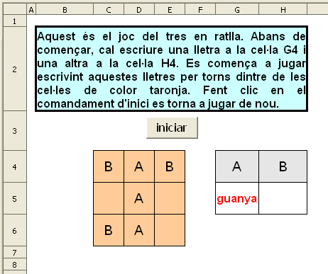

Presentació gràfica de l'activitat

Funcions que es fan servir en aquesta activitat
Objectiu de l'activitat
Jugar al tres en ratlla mitjançant el full de càlc.
Desenvolupament de l'activitat
1. Obrir el el fitxer M6 i afegir un nou full amb el nom de M6P7 tres en ratlla
2. Escriure a la cel·la J4: =G4. La cel·la G4 representa el nom del primer jugador/a. El nom que s'escrigui a la cel·la G4 es repetirà a la cel·la J4. Es pot escriure la primera lletra del nom o el nom complet
3. Escriure a la cel·la J5: =SI(I(C4=G4;D4=G4;E4=G4);1;""). Correspon a la línia horitzontal superior.
Si cada una de les cel·les del rang C4:E4 té el mateix valor que la cel·la G4, llavors la cel·la J5 tindrà el valor 1. Per tant, el valor 1 indica que hi ha tres lletres en línia sent aquest l'objectiu del joc del tres en ratlla.
Aquest joc ocupa les cel·les del rang C4:E6 donant 8 possibles línies guanyadores (tres línies horitzontals, tres línies verticals i dues línies obliqües).
4. Escriure a la cel·la
J6:
=SI(I(C5=G4;D5=G4;E5=G4);1;""). Correspon a la línia horitzontal del mig.
5. Escriure a la cel·la
J7:
=SI(I(C6=G4;D6=G4;E6=G4);1;""). Correspon a la línia horitzontal inferior.
6. Escriure a la cel·la
J8:
=SI(I(C4=G4;C5=G4;C6=G4);1;""). Correspon a la línia vertical de l'esquerra.
7. Escriure a la cel·la
J9:
=SI(I(D4=G4;D5=G4;D6=G4);1;""). Correspon a la línia vertical del mig.
8. Escriure a la cel·la
J10:
=SI(I(E4=G4;E5=G4;E6=G4);1;""). Correspon a la línia vertical de la dreta.
9. Escriure a la cel·la
J11:
=SI(I(C4=G4;D5=G4;E6=G4);1;""). Correspon a la línia obliqua d'esquerra a dreta.
10. Escriure a la cel·la
J12:
=SI(I(E4=G4;D5=G4;C6=G4);1;""). Correspon a la línia obliqua de dreta a esquerra.
11. Escriure a la cel·la
K4:
=H4
Representa el/la segon/a judador/a. El nom que s'escrigui a la cel·la H4 es repetirà a la cel·la K4. Es pot escriure la primera lletra del nom o el nom complet.
Ara es torna a fer el mateix per al/la segon/a jugador/a:
12. Escriure a la cel·la
K5:
=SI(I(C4=H4;D4=H4;E4=H4);1;"")
13. Escriure a la cel·la
K6:
=SI(I(C5=H4;D5=H4;E5=H4);1;"")
14. Escriure a la cel·la
K7:
=SI(I(C6=H4;D6=H4;E6=H4);1;"")
15. Escriure a la cel·la
K8:
=SI(I(C4=H4;C5=H4;C6=H4);1;"")
16. Escriure a la cel·la
K9:
=SI(I(D4=H4;D5=H4;D6=H4);1;"")
17. Escriure a la cel·la
K10:
=SI(I(E4=H4;E5=H4;E6=H4);1;"")
18. Escriure a la cel·la
K11:
=SI(I(C4=H4;D5=H4;E6=H4);1;"")
19. Escriure a la cel·la
k12:
=SI(I(E4=H4;D5=H4;C6=H4);1;"")
20. Assignar els següents atributs a les cel·les del rang
C4:E6:
color de la lletra: negre
tipus de lletra: Arial
mida: 14
color de fons: taronja 4
centrar horitzontal i verticalment el contingut de les cel·les
Fer visibles totes les línies de les vores de les cel·les
21. Assignar els següents atributs a les cel·les G4 i H4
color de la lletra: negre
tipus de lletra: Arial
mida: 14
color de fons: gris 20%
centrar horitzontal i verticalment el contingut de les cel·les
Fer visibles totes les línies de les vores de les cel·les
22. Escriure a la cel·la G5: =SI(G4:H4="";"";SI(SUMA(J3:J18)=1;"guanya";""))
Si la suma del rang J3:J18 és igual a 1, llavors apareix la paraula “guanya”; si no; no apareix cap valor.
23. Escriure a la cel·la
H5:
=SI(G4:H4="";"";SI(SUMA(K3:K18)=1;"guanya";""))
24. Fer una macro amb les següent funcions:
25. Crear un botó (comandament) de Controls de formulari i assignar-li la macro feta anteriorment.
26. Validar la cel·la A1 per al valor 0.
27. Protegir les cel·les que convingui.
28. Ocultar les cel·les que convingui.
29. Comprovar que l'activitat funcioni correctament.
30. Desar el fitxer M6.
Presentació gràfica de l'activitat
Funcions que es fan servir en aquesta activitat
Objectiu de l'activitat
Escriure un número en cada una de les cel·les de color taronja perquè sumant horitzontal i verticalment doni els resultats que hi ha a cel·les de color gris.
Desenvolupament de l'activitat
1. Obrir el el fitxer M6 i afegir un nou full amb el nom de M6P7 joc de sumar
2. Escriure a la cel·la R8: =SI($A$1=0;ALEATENTRE(0;9))
3. Copiar la cel·la R8 i copiar-la al rang R8:S9 i al rang R14:T16
4. Escriure a la cel·la T8: =SUMA(R8:S8)
5. Copiar la cel·la T8 i enganxar-la a la cel·la T9
6. Escriure a la cel·la R10: =SUMA(R8:R9)
7. Copiar la cel·la R10: i enganxar-la a la cel·la S10
8. Escriure a la cel·la U14: =SUMA(R14:T14)
9. Copiar la cel·la U14 i enganxar-la a la cel·les U15 i 16
10. Escriure a la cel·la R17: =SUMA(R14:R16)
11. Copiar la cel·la R17 i enganxar-la a les cel·les S17 i R17
12. Assignar els següents atributs a les cel·les del rangs B8:C9 i I8:K10:
13. Assignar els següents atributs a les cel·les dels rangs D8:D9 , B10:C10,L8:L10 i I11:K11
color de fons: gris 10%
tipus de lletra: Arial
tipografia: normal
mida: 14
14. Escriure a la cel·la D8: =T8
15. Escriure a la cel·la D9: =T9
16. Escriure a la cel·la B10: =R10
17. Escriure a la cel·la C10: =S10
18. Escriure a la cel·la E8: =SI(I(B8="";C8="");"";SI(SUMA(B8:C8)=D8;"bé";""))
Amb aquesta fórmula la cel·la E8 no mostrarà cap valor si les cel·les B8 i C8 no tenen cap valor, en cas contrari es mostrarà el "bé" si la suma de la cel·la B8 més la cel·la C8 sigui igual al valor de la cel·la D8; si no, no es mostra cap valor("").
19. Copiar la cel·la
E8 i enganxar-la a la cel·la
E9.
20. Escriure a la cel·la
B11:
=SI(I(B8="";B9="");"";SI(SUMA(B8:B9)=B10;"bé";""))
21. Copiar la cel·la
B11 i enganxar-la a la cel·la
C11.
22. Escriure a la cel·la
M8:
=SI(I(I8="";J8="";K8="");"";SI(SUMA(I8:K8)=L8;"bé";""))
23. Copiar la cel·la
M8 a les cel·les
M9 i
M10
24. Escriure a la cel·la
L8:
=U14
25. Copiar la cel·la
L8 a les cel·les
L9 i
L10
26. Escriure a la cel·la
I11:
=R17
27. Copiar la cel·la
I11 a les cel·les
J11 i
K11
28. Escriure a la cel·la
I12:
=SI(I(I8="";I9="";I10="");"";SI(SUMA(I8:I10)=I11;"bé";""))
29. Copiar la cel·la
I12 a les cel·les
J12 i
K12
30. Fer una macro amb els següents funcions:
31. Crear un botó de prémer de Controls de formulari i assignar-li la macro anteriorment feta.
32. Protegir les cel·les que convingui.
33. Ocultar les cel·les que convingui.
34. Validar la cel·la A1 al valor 0 amb missatge d'avis.
35. Validar les cel·les dels rangs B8:C9 i I8:K10 perquè només es puguin escriure-hi números.
36. Comprovar que l'activitat funcioni correctament.
37. Desar el fitxer M6.
Presentació gràfica de l'activitat
Funcions que es fan servir en aquesta activitat
Objectiu de l'activitat
Practicar el càlcul mental.
Desenvolupament de l'activitat
1. Orir el fitxer M6 i afegir un nou full amb el nom de M6P7 endevinar número
2. Escriure a la cel·la B2 i a les cel·le del rang B5:B9 el que hi ha escrit en el gràfic de presentació de l'activitat.
3. Escriure a les cel·la B13 i B14 el que hi ha escrit en el gràfic de la presentació de l'activitat.
4. Escriue a la cel·la G5: =SI(A1=0;ALEATENTRE(1;50))
5. Escriure a la cel·la C7: =SI(A1=0;ALEATENTRE(0;10))
6. Fer que la cel·la E11 i E13 tinguin el mateix format que les cel·les del gràfic de l'activitat de presentació.
7. Escriure a la cel·la E13: =SI(E11="";"";(E11+C7/2-C7)/2)
Aquesta fórmula calcula el número que s'ha pensat. El plantejament del problema
va en funció de la fórmula escrita. En aquest cas l'expressió matemàtica del problema seria:
NP*2 + C7 – C7/2 = E11. NP és él número pensat i E11 és el resultat de fer les operacions que es proposen. Aïllant NP s'obté la fórmula que hi ha a la cel·la E13.
Si la cel·la E11 no mostra cap valor, llavors la cel·la C13 no presenta cap valor; en cas contrari, la cel·la E13 tindrà el valor calculat per la fórmula =SI(E11="";"";(E11+C7/2-C7)/2)
8. Fer una macro amb les següents funcions:
9. Protegir les cel·les que convingui.
10. Comprovar que funcioni correctament l'activitat.
11. Desar el fitxer M6.